AIタグが付けられた新着記事 - Qiita
[PR] Qiita Conference 2026 Autumnのご紹介「Qiita Conference 2026 Autumn」とは、10月27日（火）〜29日（木）の3日間、オンラインで開催するエンジニア向けのカンファレンスです。参加費は無料で、事前申込が必要です。生成AI時代の開発・組織・ものづくりをテーマに、各分野の第一線で活躍する登壇者が日替わりで登壇します。ぜひご参加ください。Qiita Conference 2026 AutumnについてはこちらAIは、「Artificial Intelligence（人工知能）」の略で、人間のような知的な活動（学習、推論、問題解決、理解など）をコンピューターに実現させる技術や、その研究分野全体を指します。コンピューターがまるで人間のように見える振る舞い（学習や判断）を可能にするための技術です。AIの代表的な分野AIは非常に広範な概念であり、その技術は日々進化しています。機械学習（Machine Learning）データから学習し、予測や分類を行う技術ディープラーニング（Deep Learning）機械学習の一種で、多層のニューラルネットワークを用いることで、より複雑なパターンを学習できる技術自然言語処理（Natural Language Processing、NLP）人間の言葉をコンピューターが理解し、処理する技術画像認識（Image Recognition）画像内の物体や人物、パターンなどを識別する技術ロボティクス（Robotics）ロボットの設計、製造、運用に関わる技術リファレンスWikipedia: 人工知能 - Wikipedia関連タグLLM生成AIOpenAIAnthropic
フィード


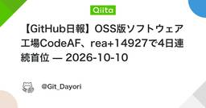


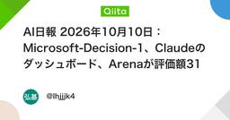


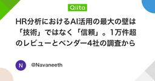

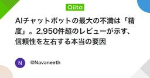


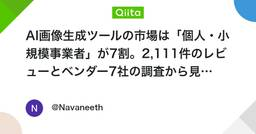
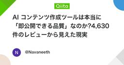


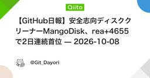


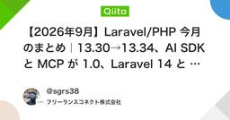


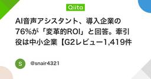


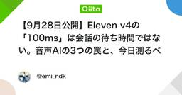


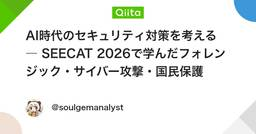


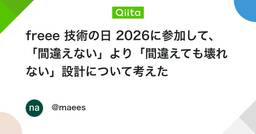